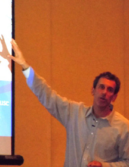

Past Presenters
2016 presenter Lindsey Biel OTR-L
2015 presenter Nancy Tarshis
2014 presenter Chantal Secile-Kira
2013 presenter Peter Gerhardt
2012 presenter Dr. Vincent Carbone
2011 presenter Dr. Micheal Powers specializes in the diagnosis, assessment, and treatment of individuals with autism and related developmental disabilities, and has published and presented extensively on these topics

2010 presenter Jed Baker, Ph.D. is the director of the Social Skills Training Project, a private organization serving individuals with autism and social communication problems.